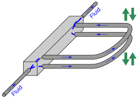

Subsections
Many traditional flowmeter technologies respond to the volumetric flow rate of the moving fluid. Velocity-based flowmeters such as magnetic, vortex, turbine, ultrasonic, and optical generate output signals proportional to the speed of fluid molecules and nothing else. This means that if the fluid flowing through one of these flowmeter types were to suddenly become denser (while still flowing by at the same number of volumetric units per minute), the flowmeter's response would not change at all.
The information provided by a volumetric flowmeter may not be what is actually best for the process being measured, however. If the flowmeter in question happens to be measuring the flow rate of feed into a chemical reactor vessel, for example, what we're really concerned with is how many molecules per unit time of feed is entering that reactor, not how many cubic meters or how many gallons. We know that changes in temperature will cause gases and liquids alike to change density, which means each volumetric unit will contain a different number of molecules after a temperature change than before. Pressure has a similar influence on gases: increased pressure means more gas molecules occupying each cubic foot (or other volumetric unit), all other factors being equal. If a process requires an accounting of molecular flow rate, a volumetric flowmeter will not provide relevant information.
In steam boiler control systems, the flow rate of water into the boiler and the flow rate of steam coming out of the boiler must be matched in order to maintain a constant quantity of water within the boiler tubes and drums. However, water is a liquid and steam is a vapor, so flow measurements based on volume are meaningless: a cubic foot of steam will never contain the same number of molecules as a cubic foot of water. The only reasonable way for the control system to balance both flow rates is to measure them as mass flows rather than volumetric flows. No matter what form (phase) the H O molecules take, every kilogram going into the boiler must be matched by a kilogram coming out of the boiler in accordance with the Law of Mass Conservation: every HO molecule entering the boiler must be matched by one HO molecule exiting the boiler in order to maintain an unchanging quantity of HO molecules within the boiler. This is why boiler feedwater and steam flowmeters alike are typically calibrated to measure in units of lbm (pounds mass) per unit time.
O molecules take, every kilogram going into the boiler must be matched by a kilogram coming out of the boiler in accordance with the Law of Mass Conservation: every HO molecule entering the boiler must be matched by one HO molecule exiting the boiler in order to maintain an unchanging quantity of HO molecules within the boiler. This is why boiler feedwater and steam flowmeters alike are typically calibrated to measure in units of lbm (pounds mass) per unit time.
A similar problem arises in instances where the flowmeter is used for custody transfer. This term denotes scenarios where a particular material is being bought and sold, and where accuracy of flow measurement is a matter of monetary importance. Again, in such instances, it is usually the number of molecules being bought and sold that really matters, not how many cubic meters or gallons those molecules occupy1.58. Here, as with the chemical reactor feed flow application, a volumetric flowmeter does not provide the most relevant information.
We know from the study of chemistry that all elements have fixed mass values: one mole1.59 of any element in monatomic form (single, unbound atoms) will have a mass equal to the atomic mass of that element. For example, one mole of carbon (C) atoms has a mass of 12 grams because the element carbon has an atomic mass of 12. Similarly, one mole of oxygen (O) atoms is guaranteed to have a mass of 16 grams1.60 because 16 is the atomic mass for the element oxygen. Consequently, one mole of carbon monoxide (CO) molecules will have a mass of 28 grams (12 + 16), and one mole of carbon dioxide (CO) molecules will have a mass of 44 grams (12 + 16 2). These molecule/mass relationships are fixed regardless of how dense or sparse the substances are: one mole of CO will have a mass of 44 grams regardless of pressure or temperature conditions affecting the density of that gas sample. The relationship between molecule count and mass for any given chemical compound is fixed, because mass is an intrinsic property of matter. If our desire is to account for the number of molecules passed through a pipe, and we happen to know the chemical composition of those molecules, measuring the mass of the fluid passing through is the most practical way to do it.
2). These molecule/mass relationships are fixed regardless of how dense or sparse the substances are: one mole of CO will have a mass of 44 grams regardless of pressure or temperature conditions affecting the density of that gas sample. The relationship between molecule count and mass for any given chemical compound is fixed, because mass is an intrinsic property of matter. If our desire is to account for the number of molecules passed through a pipe, and we happen to know the chemical composition of those molecules, measuring the mass of the fluid passing through is the most practical way to do it.
The mathematical relationship between volumetric flow ( ) and mass flow (
) and mass flow ( ) is one of proportionality with mass density (
) is one of proportionality with mass density ( ):
):
Dimensional analysis confirms this relationship. Volumetric flow is always measured in volume units (m , ft, cc, in, gallons, etc.) over time, whereas mass flow is always measured in mass units (g, kg, lbm1.61, or slugs) over time. To use a specific example, a mass flow rate in pounds (mass) per minute will be obtained by multiplying a mass density in pounds per cubic foot by a volumetric flow rate in cubic feet per minute:
, ft, cc, in, gallons, etc.) over time, whereas mass flow is always measured in mass units (g, kg, lbm1.61, or slugs) over time. To use a specific example, a mass flow rate in pounds (mass) per minute will be obtained by multiplying a mass density in pounds per cubic foot by a volumetric flow rate in cubic feet per minute:
For example, a volumetric flow rate of 1000 cubic feet per minute of water is equivalent to 62400 pounds (mass) per minute, or 1040 lbm/s, with water having a density of 62.4 lbm/ft.
With modern sensing and computational technology, it is possible to combine pressure, temperature, and volumetric flow measurements in such a way to derive a measurement of mass flow. This is precisely the goal with AGA3 flow measurement (orifice plates), AGA7 flow measurements (turbines), and AGA9 flow measurement (ultrasonic): “compensating” the fundamentally volumetric nature1.62 of these flow-measuring elements with pressure and temperature data to calculate the flow rate in mass units over time.
However, compensated flowmeter systems require much more calibration effort to maintain their long-term accuracy, not to mention a significant capital investment in the multiple transmitters and flow computer required to gather all the necessary data and perform the mass flow calculations. It would be much simpler if there existed flowmeter technologies naturally responsive to the mass flow rate of a fluid! Fortunately, such flowmeter technologies do indeed exist, which is the subject of this section.
For each of the following mass flowmeter technologies, it should be clearly understood that the instrument in question naturally responds to mass flow rate. To use our hypothetical example of a fluid stream whose density suddenly increases while the volumetric rate remains constant, a true mass flowmeter will immediately recognize the increase in mass flow (same volume rate, but more mass per unit volume) without the need for additional compensating measurements or computer calculations. True mass flowmeters operate on principles directly related to the mass of the fluid molecules passing through the meter, making them fundamentally different from other flowmeter types.
In the case of the Coriolis flowmeter, the instrument works on the principle of inertia: the force generated by an object when it is accelerated or decelerated. This basic property of mass (opposition to change in velocity) forms the basis of the Coriolis flowmeter's function. The inertial force generated inside a Coriolis flowmeter will thus double if the volumetric flowrate of a constant-mass fluid doubles; the inertial force will likewise double if the density of a constant volumetric flow of fluid doubles. Either way, the inertial force becomes a representation of how fast mass is moving through the flowmeter, and so the Coriolis flowmeter is a true mass flow instrument.
In the case of the thermal flowmeter, the instrument works on the principle of convective heat transfer: heat energy extracted from a hot object as cooler molecules pass by. The ability for fluid molecules to transport heat is a function of the specific heat of each molecule and the number of molecules moving past the warmer object. So long as the chemical composition of the fluid remains unchanged, the convective transfer of heat is a function of how many fluid molecules pass by in a given time. The heat transfer rate inside a thermal flowmeter will thus double if the volumetric flowrate of a given fluid doubles and all else remains constant; the heat transfer rate will likewise double if the density of a given fluid doubles and all else remains constant (i.e. twice the number of molecules passing by with each time interval). Either way, the convective heat transfer rate becomes a representation of how many molecules of fluid are moving through the flowmeter, which for any given fluid type is proportional to the fluid's mass flow rate. This makes the thermal flowmeter a true mass flow instrument for any (calibrated) fluid composition.
Some older, mechanical technologies1.63 exist for measuring true mass flow, but these are being supplanted by Coriolis and thermal mass flowmeter technologies. Coriolis and thermal mass flowmeters are also fast becoming the technology of choice for applications formerly the domain of compensated orifice plate (e.g. AGA3) and turbine (e.g. AGA7) flowmeters.
Coriolis flowmeters represent the state-of-the-art in mass flow measurement at the time of this writing (2010). While incredibly versatile and accurate, their internal operation can be difficult to understand. Put into very simple terms, a Coriolis flowmeter works by shaking one or more tubes carrying the flowing fluid, then precisely measuring the frequency and phase of that shaking. The back-and-forth shaking is driven by an electromagnetic coil, powered by an electronic amplifier circuit to shake the tube(s) at their mechanical resonant frequency. Since this frequency depends on the mass of each tube, and the mass of the tubes depends on the density of the fluid filling the fixed volume of the tubes, the resonant frequency becomes an inverse indication of fluid density1.64 regardless of fluid flow through the tubes. As fluid begins to move through the tubes, the inertia of the moving fluid adds another dimension to the tubes' motion: the tubes begin to undulate1.65, twisting slightly instead of just shaking back and forth. This twisting motion is directly proportional to the mass flow rate, and is internally measured by comparing the phase shift ( ) between motion at one point on the tube versus another point on the tube: the greater the undulation, the greater the phase shift between these two points' vibrations.
) between motion at one point on the tube versus another point on the tube: the greater the undulation, the greater the phase shift between these two points' vibrations.
Expressed as proportionalities:
In physics, certain types of forces are classified as fictitious or pseudoforces because they only appear to exist when viewed from an accelerating perspective (called a non-inertial reference frame). The feeling you get in your stomach when you accelerate either up or down in an elevator, or when riding a roller-coaster at an amusement park, feels like a force acting against your body when it is really nothing more than the reaction of your body's inertia to being accelerated by the vehicle you are in. The real force is the force of the vehicle against your body, causing it to accelerate. What you perceive is merely a reaction to that force, and not the primary cause of your discomfort as it might appear to be.
Centrifugal force is another example of a “pseudoforce” because although it may appear to be a real force acting on any rotating object, it is in fact nothing more than an inertial reaction. Centrifugal force is a common experience to any child who has ever played on a “merry-go-round:” that perception of a force drawing you away from the center of rotation, toward the rim. The real force acting on any rotating object is toward the center of rotation (a centripetal force) which is necessary to make the object radially accelerate toward a center point rather than travel in a straight line as it normally would without any forces acting upon it. When viewed from the perspective of the spinning object, however, it would seem there is a force drawing the object away from the center (a centrifugal force).
Yet another example of a “pseudoforce” is the Coriolis force, more complicated than centrifugal force, arising from motion perpendicular to the axis of rotation in a non-inertial reference frame. The example of a merry-go-round works to illustrate Coriolis force as well: imagine sitting at the center of a spinning merry-go-round, holding a ball. If you gently toss the ball away from you and watch the trajectory of the ball, you will notice it curve rather than travel away in a straight line. In reality, the ball is traveling in a straight line (as viewed from an observer standing on the ground), but from your perspective on the merry-go-round, it appears to be deflected by an invisible force which we call the Coriolis force.
In order to generate a Coriolis force, we must have a mass moving at a velocity perpendicular to an axis of rotation:
The magnitude of this force is predicted by the following vector equation1.66:
Where,
= Coriolis force vector
 = Angular velocity (rotation) vector
= Angular velocity (rotation) vector
= Velocity vector as viewed from the rotating reference frame
 = Mass of the object
= Mass of the object
If we replace the ball with a fluid moving through a tube, and we introduce a rotation vector by tilting that tube around a stationary axis (a fulcrum), a Coriolis force develops on the tube in such a way as to oppose the direction of rotation just like the Coriolis force opposed the direction of rotation of the rotating platform in the previous illustration:
To phrase this in anthropomorphic terms, the fluid “fights” against this rotation because it “wants” to keep traveling in a straight line. For any given rotational velocity, the amount of “fight” will be directly proportional to the product of fluid velocity and fluid mass. In other words, the magnitude of the Coriolis force will be in direct proportion to the fluid's mass flow rate. This is the basis of a Coriolis mass flowmeter.
A demonstration of this Coriolis force may be made by modifying the nozzles on a rotary lawn sprinkler so they point straight out from the center rather than angle in one direction. As water squirts through the now-straight nozzles, they no longer generate a rotational reaction force to spin the nozzle assembly, and so the nozzles remain in place (this much should be obvious). However, if someone were to try rotating the nozzle assembly by hand, they would discover the Coriolis force opposes the rotation, acting to keep the nozzle assembly from rotating. The greater the mass flow rate of water through the nozzles, the stronger the inhibiting Coriolis force. Instead of a rotating lawn sprinkler, you are now the proud owner of an anti-rotating lawn sprinkler that actually fights any attempt to rotate it:
This is a very non-intuitive concept, so it deserves further explanation. The “anti-rotating” sprinkler doesn't just fail to rotate on its own – it actually opposes any attempt to rotate from an external force (e.g. a person trying to push the tubes by hand).
This opposition would not occur if the tubes were merely capped off at the ends and filled with stagnant water. If this were the case, the tubes would simply be heavy with the water's weight, and they would rotate freely about the axis just like any pair of heavy metal tubes would (whether hollow and filled with water, or solid metal). The tubes would have inertia, but they would not actively oppose any external effort to rotate.
Having liquid water move through the tubes is what makes the difference, and the reason becomes clear once we imagine what each water molecule experiences as it flows from the center (axis of rotation) to the nozzle at the tube tip. Each water molecule originating from the center begins with no lateral velocity, but must accelerate as it travels farther along the tube toward the circumference of the tips' rotation where the lateral velocity is at a maximum. The fact that new water molecules are continually making this journey from center to tip means there will always be a new set of water molecules requiring acceleration from center velocity (zero) to tip velocity (maximum). In capped tubes filled with stagnant water, the acceleration would only occur in getting the tubes' rotation up to speed – once there, the lateral velocity of each water molecule sitting stagnant inside the tubes would remain the same. However, with water flowing from center to tip, this process of acceleration from zero velocity to tip velocity must occur over and over again (continually) for each new water molecule flowing through. This continual acceleration of new mass is what generates the Coriolis force, and what actively opposes any external force trying to rotate the “anti-rotating” sprinkler.
As you might guess, it can be difficult to engineer a tubing system capable of spinning in circles while carrying a flowstream of pressurized fluid. To bypass the practical difficulties of building a spinning tube system, Coriolis flowmeters are instead built on the principle of a flexible tube that oscillates back and forth, producing the same effect in a cyclic rather than continuous fashion. The effect is not unlike shaking a hose1.67 side to side as it carries a stream of water:
The Coriolis force opposes the direction of rotation. The greater the mass flow rate of water through the hose, the stronger the Coriolis force. If we had a way to precisely measure the Coriolis force imparted to the hose by the water stream, and to precisely wave the hose so its rotational velocity held constant for every wave, we could directly infer the water's mass flow rate.
We cannot build a Coriolis flowmeter exactly like the water hose or lawn sprinkler unless we are willing to let the process fluid exit the tubing, so a common Coriolis flowmeter design uses a U-shaped tube that redirects the fluid flow back to the center of rotation. The curved end of the flexible U-tube is forced to shake back and forth by an electromagnetic force coil (like the force coil on an audio speaker) while the tube ends anchor to a stationary manifold:
If fluid inside the tube is stagnant (no flow), the tube will simply vibrate back and forth with the applied force. However, if fluid flows through the tube, the moving fluid molecules will experience acceleration as they travel from the anchored base to the tube's rounded end, then experience deceleration as they travel back to the anchored base. This continual acceleration and subsequent deceleration of new mass generates a Coriolis force altering the tube's motion.
This Coriolis force causes the U-tube assembly to twist. The tube portion carrying fluid from the anchored base to the end tends to lag in motion because the fluid molecules in that section of the tube are being accelerated to a greater lateral velocity. The tube portion carrying fluid from the end back to the anchored base tends to lead in motion because those molecules are being decelerated back to zero lateral velocity. As mass flow rate through the tube increases, so does the degree of twisting. By monitoring the severity of this twisting motion, we may infer the mass flow rate of the fluid passing through the tube:
In order to reduce the amount of vibration generated by a Coriolis flowmeter, and more importantly to reduce the effect any external vibrations may have on the flowmeter, two identical U-tubes are built next to each other and shaken in complementary fashion (always moving in opposite directions)1.68. Tube twist is measured as relative motion from one tube to the next, not as motion between the tube and the stationary housing of the flowmeter. This (ideally) eliminates the effect of any common-mode vibrations on the inferred flow measurement:

Viewed from the end, the complimentary shaking and twisting of the tubes looks like this:
Great care is taken by the manufacturer to ensure the two tubes are as close to identical as possible: not only are their physical characteristics precisely matched, but the fluid flow is split very evenly between the tubes1.69 so their respective Coriolis forces should be identical in magnitude.
A photograph of a Rosemount (Micro-Motion) U-tube Coriolis flowmeter demonstration unit shows the U-shaped tubes (one tube is directly above the other in this picture, so you cannot tell there are actually two U-tubes):
A closer inspection of this flowmeter shows that there are actually two U-tubes, one positioned directly above the other, shaken in complementary directions by a common electromagnetic force coil:
The force coil works on the same principle as an audio speaker: AC electric current passed through a wire coil generates an oscillating magnetic field, which acts against a permanent magnet's field to produce an oscillating force. In the case of an audio speaker, this force causes a lightweight cone to move, which then creates sound waves through the air. In the case of the Coriolis meter assembly, the force pushes and pulls between the two metal tubes, causing them to alternately separate and come together (shake in opposite directions).
Two magnetic displacement sensors monitor the relative motions of the tubes and transmit signals to an electronics module for digital processing. One of those sensor coils may be seen in the previous photograph. Both the force coil and the sensor coil are nothing more than permanent magnets surrounded by movable copper wire coils. The main difference between the force coil and the sensor coil is that the force coil is powered by an AC electric current to impart a vibratory force to the tubes, whereas the sensor coils are both unpowered so they can detect tube motion by generating AC voltage signals to be sensed by the electronics module. The force coil is shown in the left-hand photograph, while one of the two sensor coils appears in the right-hand photograph:
The two AC signals generated by the sensor coils provide data from which the electronics package may interpret fluid density and mass flow rate. The frequency of the two coils' signals is inversely related to fluid density, because a denser fluid will cause the tubes to have greater mass and therefore vibrate at a lower frequency1.70. The phase shift of the two coils' signals is directly related to mass flow rate, because a greater mass flow rate will cause the tubes to twist to a greater degree, causing the sensors' signals to shift further out of phase with each other.
Advances in sensor technology and signal processing have allowed the construction of Coriolis flowmeters employing straighter tubes than the U-tube unit previously illustrated and photographed. Straighter tubes are advantageous for reasons of reduced plugging potential and the ability to easily drain all liquids out of the flowmeter when needed. In straight-tube Coriolis flowmeters, we still find the same general design of a force coil flanked by matching sensor coils measuring vibration frequency (for density measurement) and phase shift (for mass flow measurement).
The tubes inside a Coriolis flowmeter are not just conduits for fluid flow, they are also precision spring elements and volume chambers. As such, it is important to precisely know the spring characteristics and precise dimensions of these tubes so both mass flow and density may be inferred from tube motion. Every Coriolis flow element is factory-tested to determine the flow tubes' mechanical properties, then the electronic transmitter is programmed with these parameters describing the tubes' mechanical properties. The following photograph shows a close-up view of the nameplate on a Rosemount (Micro-Motion) Coriolis mass flowmeter, showing the physical constant values determined for that specific flowtube assembly at the time of manufacture:
This means every Coriolis flowmeter element (the tube and sensor assembly) is unique, with no two identical in behavior. Consequently, the transmitter (the electronics package outputting the process variable signals) must be programmed with values describing the element's behavior, and the complete flowmeter is shipped from the manufacturer as a matched set. You cannot interchange elements and transmitters without re-programming the transmitters with the new elements' physical constant values.
The tubes within a Coriolis flowmeter are shaken at their mechanical resonant frequency to maximize their shaking motion while minimizing electrical power applied to the force coil. The electronics module uses a feedback loop1.71 between the sensor coils and the shaker coil to maintain the tubes in a continuous state of resonant oscillation. This resonant frequency changes with process fluid density, since the effective mass of the fluid-filled tubes changes with process fluid density1.72, and mass is one of the variables influencing the mechanical resonant frequency of any elastic structure. Note the “mass” term in the following formula, describing the resonant frequency of a tensed string:
Where,
 = Fundamental resonant frequency of string (Hertz)
= Fundamental resonant frequency of string (Hertz)
 = String length (meters)
= String length (meters)
 = String tension (newtons)
= String tension (newtons)
 = Unit mass of string (kilograms per meter)
= Unit mass of string (kilograms per meter)
A fluid-filled tube is a close analogue to a tensed string, with tube stiffness analogous to string tension and liquid density analogous to unit mass. So long as the spring constant (tube stiffness) is known, the resonant frequency of the tubes' vibration serves to indicate the unit mass of the tubes, which in turn represents fluid density given the known internal volume of the tubes.
Temperature changes have the potential to interfere with this density measurement, because temperature affects the elasticity of metal (Young's modulus) as well as the tubes' physical dimensions. This is why all Coriolis flowmeters are equipped with RTD temperature sensors to continuously monitor the temperature of the vibrating tubes. The flowmeter's microprocessor takes this tube temperature measurement and uses it to compensate for the resulting elasticity and dimensional changes based on a prior modeling of the tube metal characteristics. In other words, the flowmeter's microprocessor continuously updates the force variable () representing tube stiffness in the resonant frequency equation so that the frequency will always be a reliable indicator of unit mass (fluid density). This temperature measurement happens to be accessible as an auxiliary output signal, which means a Coriolis flowmeter may double as a (very expensive!) temperature1.73 transmitter in addition to measuring mass flow rate and fluid density.
The ability to simultaneously measure three process variables (mass flow rate, temperature, and density) makes the Coriolis flowmeter a very versatile instrument indeed. This is especially true when the flowmeter in question communicates digitally using a “fieldbus” standard rather than an analog 4-20 mA signal. Fieldbus communication allows multiple variables to be transmitted by the device to the host system (and/or to other devices on the same fieldbus network), allowing the Coriolis flowmeter to do the job of three instruments!
An example of a Coriolis mass flowmeter being used as a multi-variable transmitter appears in the following photographs. Note the instrument tag labels in the close-up photograph (FT, TT, and DT), documenting its use as a flow transmitter, temperature transmitter, and density transmitter, respectively:
Although Coriolis flowmeters are immune to fluid turbulence and therefore have no upstream or downstream straight-pipe length requirements, they are still susceptible to other installation-related problems. One of these is vibration: attaching a Coriolis flowmeter a machine that vibrates, or to piping that vibrates from attachment to such a machine, can be problematic because sufficient external vibration may interfere with the resonant vibration of the flowmeter tubes, causing errors in density and/or flow measurement.
A problem unique to bent-tube Coriolis flowmeters is the entrapment of gas bubbles (in a liquid process) or liquid droplets (in a gas process). Either condition will create an uneven distribution of mass inside the flowmeter's tubes, potentially leading to measurement errors in density and/or flow. The bent tubes of a Coriolis flowmeter should be oriented such that bubbles or droplets cannot collect within them, similar to how a differential pressure sensor should be oriented in realtion to an orifice plate: for liquid processes, the bent tubes should be located below the pipe's centerline; for gas processes, the bent tubes should be located above the pipe's centerline:
Even though a Coriolis flowmeter inherently measures mass flow rate, the continuous measurement of fluid density allows the meter to calculate volumetric flow rate if this is the preferred means of expressing fluid flow. The relationship between mass flow (), volumetric flow (), and mass density () is quite simple:
All the flowmeter's computer must do to output a volumetric flow measurement is take the mass flow measurement value and divide that by the fluid's measured density. A simple exercise in dimensional analysis (performed with metric units of measurement) validates this concept for both forms of the equation shown above:
Coriolis mass flowmeters are very accurate and dependable. They are also completely immune to swirl and other fluid disturbances, which means they may be located nearly anywhere in a piping system with no need at all for straight-run pipe lengths upstream or downstream of the meter. Their natural ability to measure true mass flow, along with their characteristic linearity and accuracy, makes them ideally suited for custody transfer applications (where the flow of fluid represents product being bought and sold).
The American Gas Association (AGA) formalized the use of Coriolis mass flowmeters for the measurement of natural gas with their Report #11. This standard is equivalent to AGA #3 for orifice meters, AGA #7 for turbine meters, and AGA #9 for ultrasonic meters.
Perhaps the greatest disadvantage of Coriolis flowmeters is their high initial cost, especially for large pipe sizes. Coriolis flowmeters are also more limited in operating temperature than other types of flowmeters and may have difficulty measuring low-density fluids (gases) and mixed-phase1.74 (liquid/vapor) flows. The bent tubes used to sense process flow may also trap process fluid inside to the point where it becomes unacceptable for hygienic (e.g. food processing, pharmaceuticals) applications. Straight-tube Coriolis flowmeter designs, and designs where the angle of the tubes is slight, fare better in this regard than the traditional U-tube Coriolis flowmeter design. However, a disadvantage of straight tubes is that they are stiffer than U-shaped tubes, and so straight-tube Coriolis flowmeters tend to be less sensitive to low flow rates than their U-tube counterparts.
Wind chill is a phenomenon common to anyone who has ever lived in a cold environment. When the ambient air temperature is substantially colder than the temperature of your body, heat will transfer from your body to the surrounding air. If there is no breeze to move air past your body, the air molecules immediately surrounding your body will begin to warm up as they absorb heat from your body, which will then decrease the rate of heat loss. However, if there is even a slight breeze of air moving past your body, your body will come into contact with more cool (unheated) air molecules than it would otherwise, causing a greater rate of heat loss. Thus, your perception of the surrounding temperature will be cooler than if there were no breeze.
We may exploit this principle to measure mass flow rate, by placing a heated object in the midst of a fluid flowstream, and measuring how much heat the flowing fluid convects away from the heated object. The “wind chill” experienced by that heated object is a function of true mass flow rate (and not just volumetric flow rate) because the mechanism of heat loss is the rate at which fluid molecules contact the heated object, with each of those molecules having a definite mass.
The simplest form of thermal mass flowmeter is the hot-wire anemometer, used to measure air speed. This flowmeter consists of a metal wire through which an electric current passes to heat it up. An electric circuit monitors the resistance of this wire (which is directly proportional to wire temperature because most metals have a definite temperature coefficient of resistance). If air speed past the wire increases, more heat will be drawn away from the wire and cause its temperature to drop. The circuit senses this temperature change and compensates by increasing current through the wire to bring its temperature back up to setpoint. The amount of electrical power required to maintain the hot wire at a constant elevated temperature is a direct function of mass air flow rate past the wire.
Most mass air flow sensors used in automotive engine control applications employ this principle. It is important for engine control computers to measure mass air flow and not just volumetric air flow because it is important to maintain proper air/fuel ratio even if the air density changes due to changes in altitude. In other words, the computer needs to know how many air molecules are entering the engine per second in order to properly meter the correct amount of fuel into the engine for complete and efficient combustion. The “hot wire” mass air flow sensor is simple and inexpensive to produce in quantity, which is why it finds common use in automotive applications.
Industrial thermal mass flowmeters usually consist of a specially designed “flowtube” with two temperature sensors inside: one that is heated and one that is unheated. The heated sensor acts as the mass flow sensor (cooling down as flow rate increases) while the unheated sensor serves to compensate for the “ambient” temperature of the process fluid.
A typical thermal mass flowtube appears in the following photographs (note the swirl vanes in the close-up photograph, designed to introduce large-scale turbulence into the flowstream to maximize the convective cooling effect of the fluid against the heated sensor element):
Thermal mass flowmeters lend themselves well to “insertion” style probes, sensing the passage of fluid molecules at one point within the flowstream. An example is shown in the next two photographs, where a thermal mass flowmeter (manufactured by Sage) senses the amount of gas sent to a flare. The insertion probe appears in the left-hand photo (mounted in the vertical flare pipe) while the transmitter head appears in the right-hand photo (located inside of a weather-sheltered building):
The simple construction of thermal mass flowmeters allows them to be manufactured in very small sizes. The following photograph shows a small device that is not only a mass flow meter, but also a mass flow controller with its own built-in throttling valve mechanism and control electronics. To give you a sense of scale, the tube fittings seen on the left- and right-hand sides of this device are 1/4 inch, making this photograph nearly full-size:
An important factor in the calibration of a thermal mass flowmeter is the specific heat of the process fluid. “Specific heat” is a measure of the amount of heat energy needed to change the temperature of a standard quantity of substance by some specified amount1.75. Some substances have much greater specific heat values than others, meaning those substances have the ability to absorb (or release) a lot of heat energy without experiencing a great temperature change. Fluids with high specific heat values make good coolants, because they are able to remove much heat energy from hot objects without experiencing great increases in temperature themselves. Since thermal mass flowmeters work on the principle of convective cooling, this means a fluid having a high specific heat value will elicit a greater response from a thermal mass flowmeter than the exact same mass flow rate of a fluid having a lesser specific heat value (i.e. a fluid that is not as good of a coolant).
This means we must know the specific heat value of whatever fluid we plan to measure with a thermal mass flowmeter, and we must be assured its specific heat value will remain constant. For this reason, thermal mass flowmeters are not suitable for measuring the flow rates of fluid streams whose chemical composition is likely to change over time. This limitation is analogous to that of a pressure sensor used to hydrostatically measure the level of liquid in a vessel: in order for this level-measurement technique to be accurate, we must know the density of the liquid and also be assured that density will be constant over time.
Thermal mass flowmeters are simple and reliable instruments. While not as accurate or tolerant of piping disturbances as Coriolis mass flowmeters, they are far less expensive.
Perhaps the greatest disadvantage of thermal mass flowmeters is their sensitivity to changes in the specific heat of the process fluid. This makes the calibration of any thermal mass flowmeter specific for one composition of fluid only. In some applications such as automotive engine intake air flow, where the fluid composition is constant, this limitation is not a factor. In many industrial applications, however, this limitation is severe enough to prohibit the use of thermal mass flowmeters. Industrial applications for thermal mass flowmeters include natural gas flow measurement (non-custody transfer), and the measurement of purified gas flows (oxygen, hydrogen, nitrogen) where the composition is known to be very stable.
Another (potential) limitation of thermal mass flowmeters is the sensitivity of some designs to changes in flow regime. Since the measurement principle is based on heat transfer by fluid convection, any factor influencing the convective heat-transfer efficiency will translate into a perceived difference in mass flow rate. It is a well-known fact in fluid mechanics that turbulent flows are more efficient at convecting heat than laminar flows, because the “stratified” nature of a laminar flowstream impedes heat transfer across the fluid width1.76. In some thermal flowmeter designs, the walls of a heated metal tube serve as the “hot” element cooled by the fluid, and the difference between the rate of heat transferred by a laminar flowstream from the walls of a heated tube versus a turbulent flowstream can be great. Therefore, a change in flow regime (from turbulent to laminar, and vice-versa) will cause a calibration shift for this design of thermal mass flowmeter.